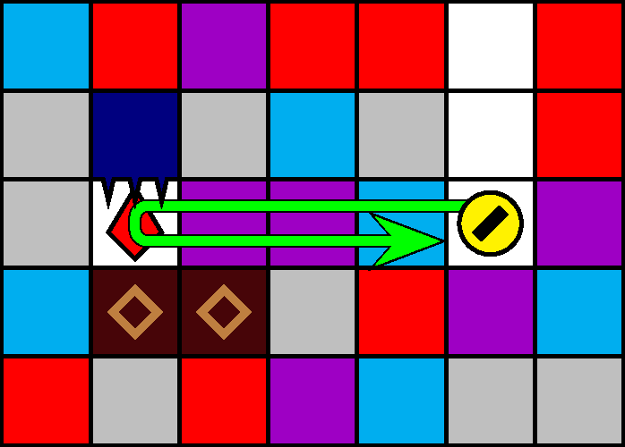
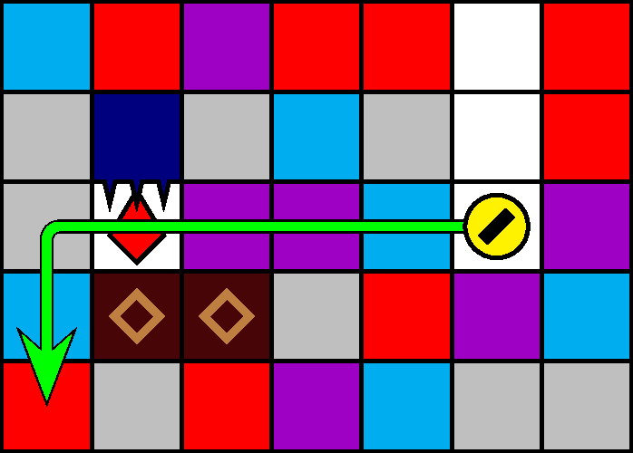

一般指針
愚形・迷子犬


指針
水平距離が 1 未満の往復移動をしません．来た経路は，その上方の安定が確保されていない限り，引き返しません．
解説
一般に，水平移動は圧迫のリスクを伴います．次の理由により，潜行を伴わない往復移動は推奨されません:
- 経路の選択に迷っているとき，操作に気を取られて上方から落下してくるブロックへの注意がおろそかになったり，周囲の状況の計算が遅れる．
- 圧迫判定を受けうるブロックの水平位置の候補が 2 つ以上に増える可能性がある（「愚形・半整数」も参照）．
- 上針着地後では，水平距離を 1 移動するまでに針猶予が間に合わず，刺突される危険がある．
- 水平位置を整数値に調整するまでに時間を要し，潜行速度も低下するため，縦横両方のレーザーの回避が困難になり得る．
特に水平距離が 1 未満の往復は可能な限り避けるべきです．
来た経路をそのまま引き返す移動（図 3.4.5.1）も広義の往復にあたります．水平移動は基本的に，その経路中で落下予定のブロックを増やしますから，来た経路を引き返すことも圧迫のリスクを伴います．経路上方の安定が確保されていない場合は，なるべく引き返さず，同じ方向に水平移動を続けるか潜行することが推奨されます（図 3.4.5.2）．そのいずれも危険または迂遠な場合は，予定経路を変更または破棄します．なお，高度を変えて（あいだに潜行を伴って）左右に行き来する移動は，上記の移動よりも比較的安全ですが，各列最深の落下予定ブロックを頻繁に更新するため，やや危険です．
水平距離が 1 の往復移動は，緊急時において有効な場合があります．「サイドステップ」を参照してください．